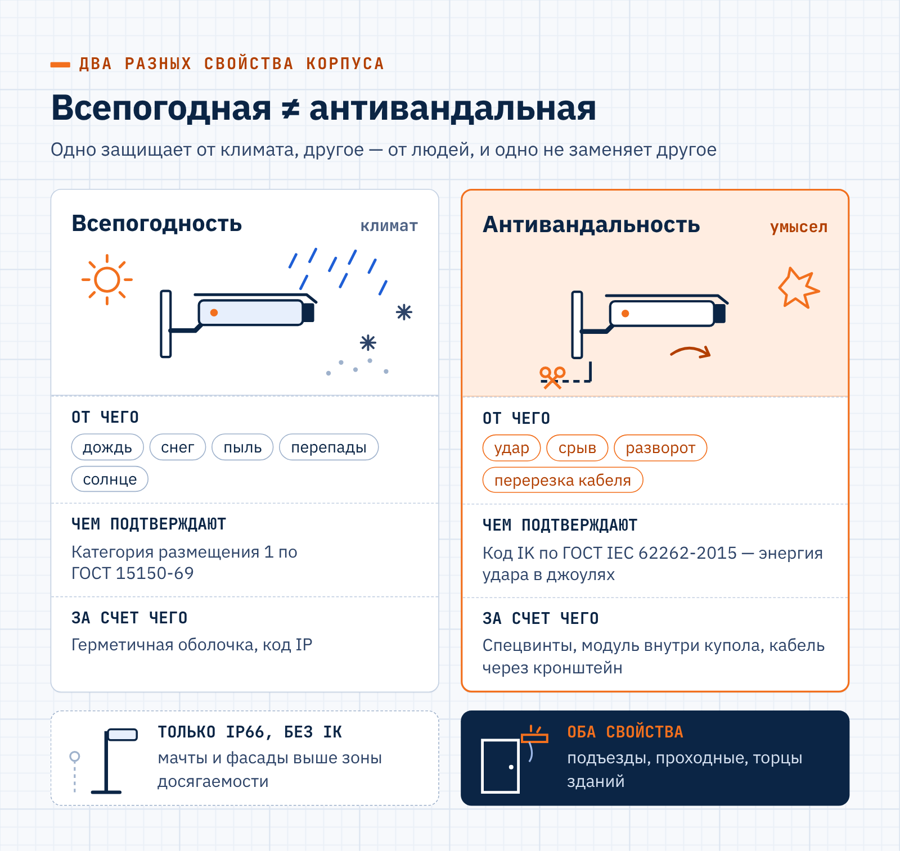
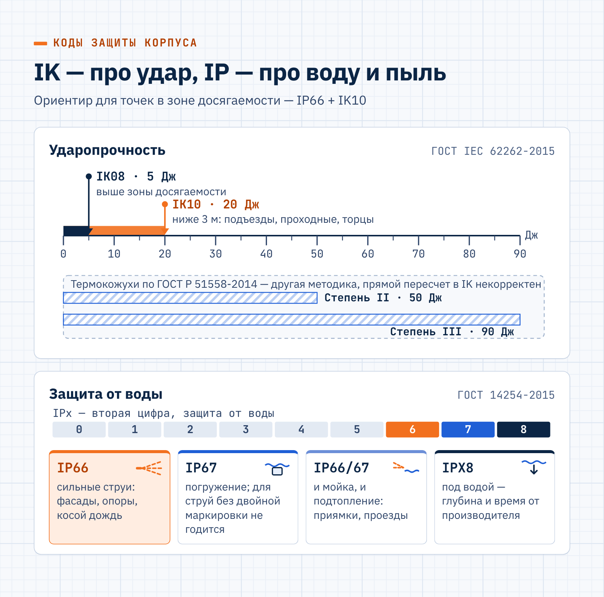
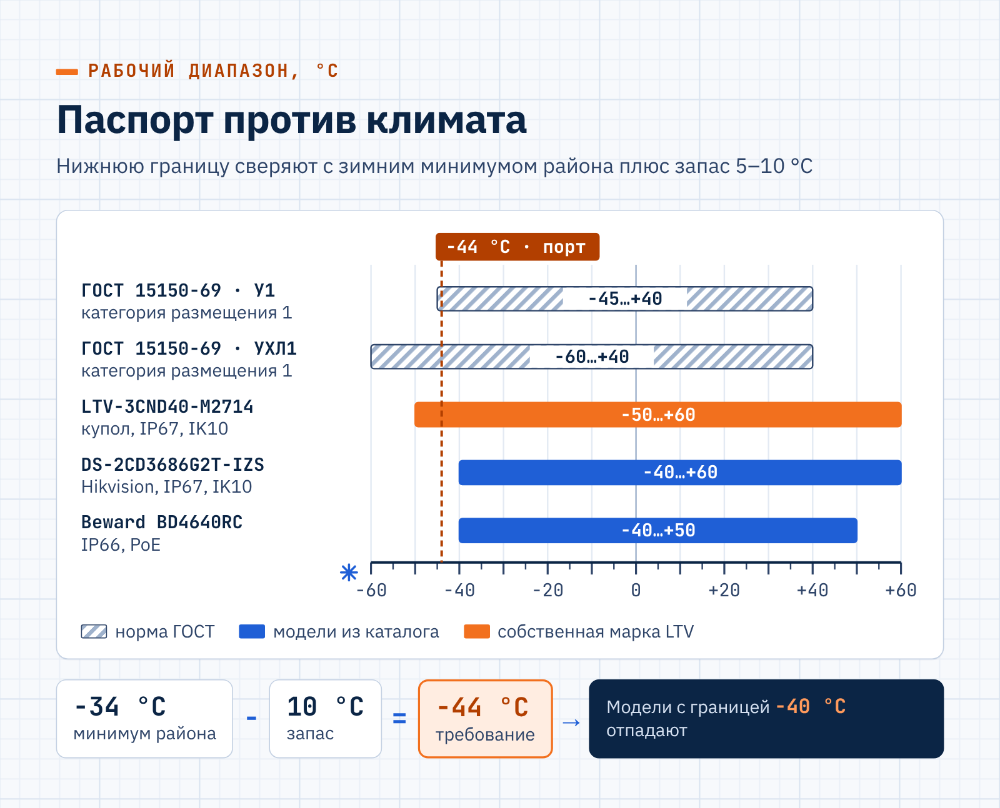
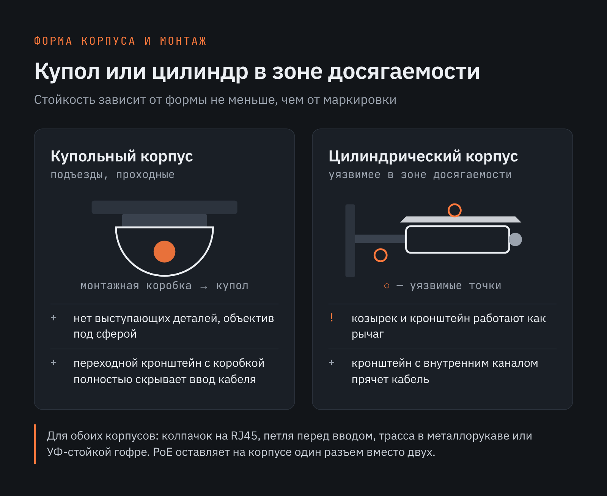
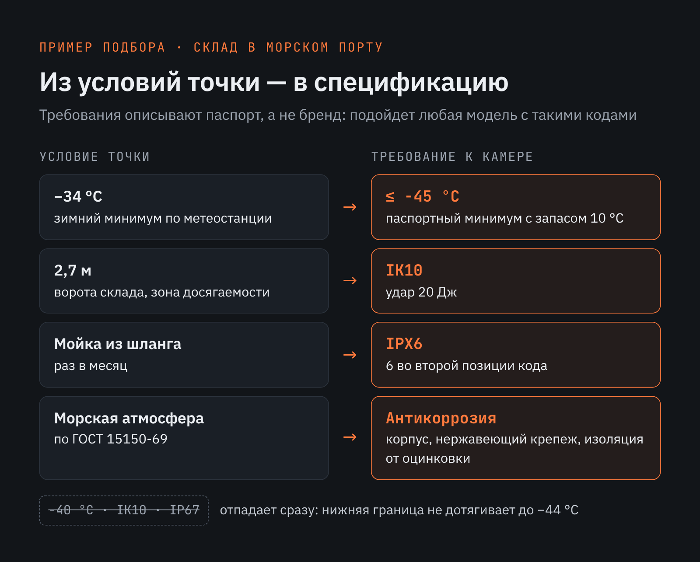

LUIS+ · GEO-статья · B2B
GEO-статья для дистрибьютора систем безопасности: камеры для сложных условий
О заказчикеLUIS+ (luis.ru) — российская компания на рынке систем безопасности и электротехники, работает более 30 лет: дистрибьютор оборудования мировых и российских производителей и владелец собственных торговых марок (LTV, LPA, ЛКД, ЛПТ, LTC и др.), 18 офисов по России.
Задача
Объяснить закупщикам и проектировщикам, как выбрать уличную камеру для тяжелых условий — вандализм, мороз, агрессивная среда, — в формате GEO-статьи с прямым ответом, нормативной базой и привязкой к моделям из каталога LUIS+.
Решение
Развела понятия «всепогодная» и «антивандальная» и перевела выбор с маркетинговых названий на проверяемые коды: IP по ГОСТ 14254-2015, IK по ГОСТ IEC 62262-2015, степени защиты термокожухов по ГОСТ Р 51558-2014, климатические исполнения и типы атмосферы по ГОСТ 15150-69 — с пунктами и таблицами стандартов. Дала таблицу «маркировка — испытание — применение», разделы о температуре и обогреве, коррозии, монтаже и кабельной трассе (пошаговый порядок), ошибки выбора, расчетный пример для склада в морском порту, FAQ и вывод; характеристики конкретных камер взяла из карточек товаров на luis.ru.
Результат
Экспертный гайд около 2000 слов: таблица кодов защиты, пошаговый монтаж, расчетный пример и пять схем. Читатель получает методику, по которой спецификация описывает требования к паспорту, а не конкретный бренд, и заканчивает статью готовым списком исходных данных для запроса подбора.
Как выбрать антивандальную уличную камеру видеонаблюдения во всепогодном исполнении для сложных условий
Для уличной точки с риском повреждений и резкими перепадами погоды подходит камера с маркировкой не ниже IP66, ударопрочностью IK10 и нижней границей рабочих температур на 5–10 °C ниже местного зимнего минимума. Антивандальную уличную камеру видеонаблюдения выбирают по кодам защиты из паспорта, а не по названию серии. У моря, на очистных сооружениях и химических производствах к этим параметрам добавляются коррозионностойкий корпус, нержавеющий крепеж и стойкие уплотнители.
Чем всепогодное исполнение отличается от антивандального
Всепогодность и антивандальность описывают разные свойства корпуса, и одно не заменяет другое. Всепогодная камера видеонаблюдения рассчитана на работу под открытым небом: при дожде и снеге, пыли, перепадах температуры и прямом солнце. В терминах ГОСТ 15150-69 это категория размещения 1, то есть эксплуатация на открытом воздухе под воздействием всей совокупности климатических факторов района (п. 2.7, таблица 2).

Антивандальное исполнение отвечает за стойкость к умышленному воздействию: удару, попытке сорвать или развернуть устройство, перерезать кабель. Ударопрочность выражается кодом IK по ГОСТ IEC 62262-2015, действующему с 1 октября 2016 года. Защиту от вскрытия обеспечивает конструкция: винты под специальный инструмент, поворотный модуль внутри купола, ввод кабеля через кронштейн.
Слово «антивандальная» в названии модели классом защиты не является. Проверяемый параметр — код IK с энергией удара в джоулях: по общему правилу ГОСТ IEC 62262-2015 испытание включает пять ударов на каждую открытую поверхность оболочки.
Обычная уличная IP-видеокамера с маркировкой IP66 без кода IK хорошо переносит осадки и мороз, но не рассчитана на удар по стеклу или рывок за кронштейн. Такие модели уместны на мачтах и фасадах выше зоны досягаемости. Для подъездов, проходных и торцов зданий нужен корпус, который сочетает оба свойства.
Какие коды IP и IK нужны антивандальной камере для улицы
Защищенность корпуса описывают два кода из разных стандартов. Код IP по ГОСТ 14254-2015, действующему с 1 марта 2017 года, показывает защиту от пыли и воды, а код IK отражает энергию удара, которую выдерживает оболочка.
Для термокожухов ГОСТ Р 51558-2014 вводит собственные степени защиты с требованиями к удару, герметичности и обогреву (п. 5.3.5). Сопоставление маркировок с типичными условиями эксплуатации помогает отсечь неподходящие модели еще до сравнения характеристик.
| Маркировка | Что подтверждает испытание | Где применяется |
|---|---|---|
| IP66 | Пыль не проникает в оболочку; сильные водяные струи не оказывают вредного воздействия | Фасады, опоры, навесы, точки под косым дождем и снегом |
| IP67 | Пыль не проникает; оболочка защищена при временном погружении в воду | Приямки и подтопляемые участки; стойкость к струям без двойной маркировки не подтверждена |
| IP66/IP67 | Выдержаны оба испытания | Низкие точки у проездов и приямков, где возможны и мойка, и подтопление |
| IK08 | Удар энергией 5 Дж | Установка выше зоны досягаемости |
| IK10 | Удар энергией 20 Дж | Подъезды, проходные, торцы зданий, установка ниже 3 м |
| Степени II и III по ГОСТ Р 51558-2014 | Термокожух выдерживает удар тяжелым предметом 50 и 90 Дж, оболочка не ниже IP66 и IP67 | Объекты, техническое задание которых ссылается на этот стандарт |
Для большинства точек в зоне досягаемости достаточно сочетания IP66 и IK10 — именно эти коды ищут в паспорте, когда выбирают антивандальную уличную камеру видеонаблюдения. Двойная маркировка IP66/IP67 нужна там, где корпус моют струей и он может оказаться под водой: по разделу 6 ГОСТ 14254-2015 оболочка, обозначенная только цифрой 7, не считается пригодной для воздействия струй.
Требования ГОСТ Р 51558-2014 к термокожухам выше IK10 по энергии удара, но испытания проводятся по разным методикам, и прямой пересчет некорректен.

Форма корпуса влияет на стойкость не меньше маркировки. У купольной модели нет выступающих деталей, а объектив закрыт сферой, поэтому купольную камеру Hikvision или другого производителя с кодом IK10 чаще ставят в подъездах и на проходных. Козырек и кронштейн цилиндрического корпуса работают как рычаг, и в зоне досягаемости такая конструкция уязвимее.
Как подобрать температурный диапазон и обогрев под климат объекта
Рабочий диапазон из паспорта сверяют с климатом места установки, а не со средними значениями по региону. Для изделий категории размещения 1 ГОСТ 15150-69 задает нижнее рабочее значение −45 °C у исполнения У1 и −60 °C у исполнения УХЛ1 при верхнем +40 °C (п. 3.2, таблица 3).
Например, уличная камера Hikvision DS-2CD3686G2T-IZS по карточке товара на октябрь 2026 года заявлена с диапазоном −40…+60 °C, IP67 и IK10. Для районов, где зимой бывает холоднее −40 °C, такой границы недостаточно: выбирают модель с более низким минимумом или термокожух с обогревом.
Купольная модель LTV-3CND40-M2714 собственной марки LUIS+ рассчитана на −50…+60 °C при IP67 и IK10, и на объектах с морозами до −50 °C ей не нужен дополнительный кожух. Камера Beward BD4640RC с питанием PoE заявлена с IP66 и диапазоном −40…+50 °C — этого достаточно для средней полосы.
Обогрев защищает не только электронику: он удерживает стекло и купол от инея, при котором ИК-подсветка рассеивается и ночное изображение теряет четкость. Для термокожухов ГОСТ Р 51558-2014 нормирует температуру внутри не ниже −10 °C при уличной до −40 °C для средней степени защиты и ниже −40 °C для высокой (п. 5.3.5.3, таблица 3).

Запас по нижней температуре в 5–10 °C относительно абсолютного минимума района — экспертная рекомендация: он компенсирует погрешность климатических данных и аномальные зимы. Обогрев при этом не отменяет требований к ударопрочности, и антивандальную камеру для северного объекта выбирают по обоим параметрам сразу.
Помимо рабочего диапазона, в паспорте проверяют параметры, которые нередко указаны мелким шрифтом или вынесены в руководство по монтажу:
- Холодный старт. Температура, при которой камера включается после перерыва в питании, у части моделей выше нижней рабочей границы.
- Мощность с обогревом. Источник питания подбирают по пиковому потреблению с включенным нагревателем.
- Верхняя граница. Темный корпус на южном фасаде нагревается сильнее воздуха, поэтому для юга нужны запас по верхней температуре и козырек.
Эти параметры стоит выписать в спецификацию рядом с рабочим диапазоном: тогда модели сравнивают по полному набору температурных данных, а не по одной строке из карточки товара.
Как защитить корпус и крепеж от коррозии и агрессивной среды
У моря и рядом с промышленными выбросами ресурс корпуса определяет состав воздуха, а не температура. ГОСТ 15150-69 различает четыре типа атмосферы: условно-чистую, промышленную, морскую и приморско-промышленную (п. 3.14, таблица 8). Классификация основана на содержании сернистого газа и хлоридов, которые разрушают покрытия, уплотнители и контакты разъемов.
Для таких площадок уличная камера видеонаблюдения в антивандальном исполнении должна иметь еще и заявленную стойкость к коррозии. Повышенные требования к материалам предъявляют объекты, где агрессивная среда присутствует постоянно или возникает при штатной работе:
- морские порты и прибрежные склады;
- очистные сооружения и канализационные насосные станции;
- животноводческие комплексы;
- химические и металлургические производства;
- автомойки и транспортные депо.
На таких объектах стандартное порошковое покрытие и оцинкованный крепеж разрушаются заметно быстрее, чем на обычной улице. Первые следы коррозии появляются на кронштейне и винтах.
Материалы и узлы, которые проверяют в первую очередь
Для агрессивной среды выбирают корпус из нержавеющей стали или алюминиевого сплава с антикоррозийным покрытием, а в паспорте ищут результаты испытаний в соляном тумане. Правило одинаково для всех брендов: уличная камера Dahua, Hikvision или LTV подходит для морской атмосферы только при заявленной производителем стойкости к ней.
Коррозия чаще начинается с мест соединения деталей, поэтому при монтаже отдельно проверяют несколько узлов:
- Крепеж: винты и анкеры из нержавеющей стали того же класса стойкости, что и корпус.
- Контакт разнородных металлов: алюминий, оцинковка и нержавеющая сталь во влажной соленой среде образуют гальваническую пару, и место контакта изолируют прокладкой.
- Уплотнители: резина сохраняет эластичность на морозе и не разрушается от испарений аммиака или хлора.
Эти узлы включают в регламент осмотров: дефект уплотнителя или винта обнаруживается при визуальной проверке раньше, чем вода попадает в корпус.
Как закрепить камеру и защитить кабельную линию
Слабым местом защищенной камеры чаще оказывается узел крепления и ввода кабеля, а не корпус. Вода проникает по оболочке кабеля к разъему, а открытая проводка на кронштейне позволяет перерезать линию. Даже камера с кодом IK10 остается уязвимой, если кабель выходит из кронштейна открытым участком.
Монтаж на объекте со сложными условиями выполняют в определенной последовательности, чтобы ни один узел не остался без защиты от воды, удара и перенапряжения:
- Высота установки. Точки ниже 3 м находятся в зоне досягаемости и требуют кода IK10; выше допустим IK08, если рядом нет опор и козырьков, с которых можно дотянуться.
- Монтажная коробка. Камеру ставят на штатную коробку или кронштейн производителя, внутри которых прячут запас кабеля и разъемы.
- Герметизация ввода. Разъем RJ45 закрывают водозащитным колпачком из комплекта, а перед вводом делают петлю, чтобы вода стекала вниз.
- Защита трассы. Открытые участки прокладывают в металлорукаве или в уличной гофре для кабеля со стабилизацией к ультрафиолету.
- Защита от перенапряжений. Линии между зданиями оснащают устройствами защиты и заземляют по проекту.
- Проверка. После монтажа проверяют затяжку винтов и ночное изображение: блик от козырька и капли на куполе видны только в темноте.
Для гофрированных труб на открытом воздухе важна стойкость к солнцу: ПВХ-гофра без стабилизатора со временем становится хрупкой и трескается на изгибах. Подходящие изделия выпускают DKC и другие производители кабеленесущих систем.
Схема питания влияет на надежность ввода. PoE-камера получает питание и данные по одному кабелю, и на корпусе остается один герметизируемый разъем вместо двух. Упомянутая выше DS-2CD3686G2T-IZS рассчитана на PoE стандарта 802.3at с потреблением до 15 Вт — с этим значением сверяют бюджет порта.
Купольная камера Dahua или аналогичная модель под козырьком монтируется через переходной кронштейн с коробкой, и ввод кабеля полностью скрыт от доступа. Для цилиндрических корпусов эту задачу решает кронштейн с внутренним каналом.

Уличная IP-камера для видеонаблюдения на отдельной опоре требует защиты с обеих сторон линии. Трасса к ней длиннее, и по кабелю в здание может прийти импульс от близкого разряда молнии.
Ограничения и типичные ошибки при выборе
Защищенное исполнение снижает риск отказа, но не делает оборудование неуязвимым. Для взрывоопасных зон требуется взрывозащищенное исполнение с отдельной сертификацией, а для работы под водой нужна маркировка IPX8 с указанными производителем глубиной и временем погружения.
Даже правильно подобранная антивандальная камера лишь замедляет повреждение, поэтому критичные точки дублируют второй камерой, направленной на первую. Ошибки выбора, из-за которых защищенное устройство не выдерживает условий объекта, видны еще на этапе спецификации:
- модель выбрана по слову «антивандальная» в названии, а код IK в паспорте не указан;
- параметры перенесены с серии на модель, хотя у камер Dahua IPC, как и у других линеек, ударопрочность и диапазон температур различаются от артикула к артикулу;
- для мойки фасада выбрана камера с IP67 без двойной маркировки IP66/IP67;
- у моря установлен стандартный корпус, а крепеж собран из оцинкованных и нержавеющих деталей.
Каждая из этих ошибок устраняется сверкой паспорта с условиями точки до закупки. Для такой проверки достаточно трех исходных данных: климата, состава воздуха и высоты монтажа.
Пример подбора для склада в морском порту
Условные исходные данные: камера контролирует ворота склада на причале на высоте 2,7 м, зимний минимум по данным ближайшей метеостанции составляет −34 °C, фасад раз в месяц моют из шланга. Атмосфера относится к морскому типу по ГОСТ 15150-69. Требования к камере выводятся из этих данных последовательно:
- Нижняя граница с запасом 10 °C: −34 − 10 = −44 °C, значит, подходят модели с паспортным минимумом −45 °C и ниже.
- Высота 2,7 м попадает в зону досягаемости — нужен код IK10.
- Мойка из шланга требует защиты от сильных струй, то есть цифры 6 во второй позиции кода IP.
- Морская атмосфера требует антикоррозийного корпуса, нержавеющего крепежа и изоляции контакта с оцинкованным кронштейном.
Итоговая спецификация описывает требования, а не модель: под нее подойдет и камера RVi, и модель другого бренда с таким же паспортом.

Модели с минимумом −40 °C из сравнения исключаются сразу, даже при наличии IK10 и IP67. Так же отсекаются камеры без заявленной стойкости к морской атмосфере, какими бы надежными они ни были на обычной улице.
Частые вопросы
Эти вопросы чаще других возникают при подборе камер для улицы и агрессивной среды. Ответы дополняют разделы статьи и не повторяют их.
Можно ли поставить обычную камеру в термокожух вместо всепогодной модели?
Можно, и для сурового климата такой вариант нередко дает больший запас по нижней температуре. Термокожух подбирают по диапазону рабочих температур, системе обогрева, материалу корпуса, степени защиты и внутреннему объему: именно эти характеристики ГОСТ Р 51558-2014 требует указывать в документации. Камеру внутри настраивают так, чтобы ИК-подсветка не отражалась от стекла кожуха.
Что запросить у поставщика перед покупкой камеры для сложных условий?
Перед заказом IP-камеры RVi или модели другого бренда запросите паспорт или руководство по эксплуатации с кодами IP и IK, рабочим диапазоном температур и данными о холодном старте. Для агрессивной среды нужны сведения об антикоррозийном исполнении. Сверьте артикул в счете с артикулом в паспорте: модели одной серии различаются исполнением.
Нужна ли антивандальная камера на высоте 4–5 метров?
Нужна там, где рядом есть козырьки, заборы и опоры, с которых корпус можно достать, или где в него легко попасть брошенным камнем. Для открытых дворов, проходных и торцов жилых домов уличную камеру с антивандальной защитой разумно ставить и на такой высоте. Для мачт на охраняемой территории обычно достаточно кода IK08 и стандартного крепления.
Вывод
Камеру для сложных условий выбирают по трем группам параметров: кодам IP и IK, рабочему диапазону температур с запасом и стойкости корпуса к среде размещения. Для точек в зоне досягаемости ориентир — сочетание IP66 и IK10, при риске подтопления нужна двойная маркировка IP66/IP67, для моря и химических производств подходит только антикоррозийное исполнение. Перед закупкой антивандальной камеры для уличного видеонаблюдения сверьте паспорт с климатом, составом воздуха и высотой монтажа, а узел крепления и кабельную трассу защитите так же тщательно, как корпус.
В каталоге LUIS+ представлена продукция более 2500 брендов, и для одной точки установки можно сравнить защищенные камеры нескольких производителей с одинаковыми требованиями к IP, IK и температуре. В линейке собственной марки LTV, которую компания развивает с 2004 года, есть видеокамеры, видеорегистраторы, объективы и термокожухи.
Сервисный центр LUIS+ выполняет гарантийное и негарантийное обслуживание оборудования, купленного у компании, а более 150 профильных инженеров помогают сверить паспортные характеристики с условиями объекта еще на этапе спецификации.
Опишите условия эксплуатации: минимальную и максимальную температуру, высоту установки и риск вандализма, наличие соленого воздуха, химических испарений или мойки под давлением. Подберем модели с подходящими степенями защиты, кронштейны и монтажные коробки, а также проверим, хватит ли мощности PoE с учетом обогрева.